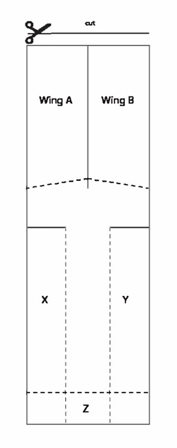

Attaching package: 'MASS'
The following object is masked from 'package:dplyr':
select
Show Code
library(car)
Loading required package: carData
Attaching package: 'car'
The following object is masked from 'package:dplyr':
recode
The following object is masked from 'package:purrr':
some
Show Code
library(knitr)library(kableExtra)
Attaching package: 'kableExtra'
The following object is masked from 'package:dplyr':
group_rows
Show Code
# Global chunk options (keeps HTML output tidy)knitr::opts_chunk$set(echo =TRUE,warning =FALSE,message =FALSE,fig.width =8,fig.height =5,fig.align ="center",dpi =150,tidy =TRUE)# Plot themetheme_set(theme_minimal() +theme(plot.title =element_text(hjust =0.5, size =14, face ="bold"),plot.subtitle =element_text(hjust =0.5, size =12)))
Introduction
This report documents a comprehensive 2³ factorial Design of Experiments (DOE) using a paper helicopter as the experimental subject. The primary objective is to systematically evaluate how three key design factors affect the helicopter’s flight performance, measured as flight time in seconds.
Experimental Context and Rationale
A paper helicopter provides an excellent platform for learning DOE principles because:
Controllable factors: Physical dimensions and weight can be precisely modified
Measurable response: Flight time is easily quantifiable and repeatable
Physical interpretability: Results have clear engineering meaning
Cost-effective: Requires minimal materials and equipment
Research Questions
Main Effects: How does each individual factor (rotor length, rotor width, added mass) affect flight time?
Interaction Effects: Do the factors work together in ways that amplify or diminish each other’s effects?
Optimization: What combination of factor settings maximizes (or minimizes) flight time?
Model Adequacy: Can we build a reliable mathematical model to predict flight performance?
Experimental Factors and Levels
The experiment examines three factors, each at two levels:
Factor A - Rotor Length: 7.5 cm (low level) vs. 8.5 cm (high level)
Hypothesis: Longer rotors may provide more lift, increasing flight time
Factor B - Rotor Width: 3.5 cm (narrow) vs. 5.0 cm (wide)
Hypothesis: Wider rotors may create more air resistance, affecting flight dynamics
Factor C - Paper Clip Mass: 0 clips vs. 2 clips
Hypothesis: Added weight may increase stability but also increase descent rate
Design Strategy
A full 2³ factorial design was selected because:
Efficiency: Examines all possible factor combinations systematically
Interaction Detection: Can identify how factors work together
Statistical Power: Provides sufficient data for reliable conclusions
Educational Value: Demonstrates fundamental DOE principles
Paper helicopter design

Paper helicopter diagram
Figure 1: Schematic showing the paper helicopter design with labeled dimensions. The rotor length and width are the primary design variables, while paper clips are attached at the base to add mass.
Materials and Methods
Materials
Paper sheets (specify paper type, e.g., A4 office paper, 80 g/m²).
Ruler and scissors.
Paper clips (mass per clip should be measured; here “2” denotes two clips).
Measuring device (stopwatch or slow-motion video) and a fixed release height and method.
Build & Measurement protocol (step-by-step)
Cut and fold the paper helicopter rotor according to the schematic. Create rotors of lengths 7.5 cm and 8.5 cm; widths 3.5 cm and 5.0 cm as experimental factor levels.
Attach 0 or 2 paper clips to the hook point depending on the treatment.
Release the helicopter from a fixed height (e.g., 2.0 m) using the same release method each run to minimize bias. Start/stop timing from release to first contact with the ground.
Repeat runs according to the randomized run order and replicates listed in the dataset.
Record times in seconds in the Time_s column.
Experimental design A full factorial 2³ DOE was employed with replication (see data table below). Randomization was applied to run order to limit systematic error.
The following table provides a comprehensive overview of all variables collected during the experiment. Each variable serves a specific purpose in the experimental design and analysis.
Show Code
vars_table <-tibble(Variable =c("RunID", "RunOrder", "Replicate", "RotorLength_cm", "RotorWidth_cm", "PaperClip", "Time_s", "Treatment"),Description =c("Sequential ID for each run (1-24)","Randomized execution order used when conducting the experiment","Replicate number indicating repetition index (1, 2, or 3)","Rotor length in centimeters (levels: 7.5 = Short, 8.5 = Long)","Rotor width in centimeters (levels: 3.5 = Narrow, 5.0 = Wide)","Number of paper clips attached (0 = No clip, 2 = Two clips)","Measured flight time in seconds from release to landing","Treatment label summarizing factor high/low levels using standard DOE notation" ),Purpose =c("Data organization and tracking","Controls for time-based systematic errors","Enables estimation of experimental error","Primary design factor A","Primary design factor B", "Primary design factor C","Response variable (dependent variable)","Treatment identification for analysis" ))vars_table %>%gt() %>%tab_header(title =md("**Variable Definitions and Purposes**")) %>%cols_label(Variable ="Variable Name", Description ="Description", Purpose ="Experimental Purpose" ) %>%tab_style(style =cell_text(weight ="bold"),locations =cells_column_labels() )
Variable Definitions and Purposes
Variable Name
Description
Experimental Purpose
RunID
Sequential ID for each run (1-24)
Data organization and tracking
RunOrder
Randomized execution order used when conducting the experiment
Controls for time-based systematic errors
Replicate
Replicate number indicating repetition index (1, 2, or 3)
Number of paper clips attached (0 = No clip, 2 = Two clips)
Primary design factor C
Time_s
Measured flight time in seconds from release to landing
Response variable (dependent variable)
Treatment
Treatment label summarizing factor high/low levels using standard DOE notation
Treatment identification for analysis
Key Points for Table Interpretation:
RunID vs RunOrder: RunID is sequential (1,2,3…) while RunOrder shows the actual randomized sequence used during data collection
Treatment Notation: Uses standard DOE notation where lowercase letters indicate high levels (a=long rotor, b=wide rotor, c=with clips), and (1) represents all factors at low levels
Replication: Each of the 8 treatment combinations was repeated 3 times, providing 24 total observations
Experimental Design Summary
The table below shows how the 2³ factorial design is structured, displaying each unique treatment combination with its corresponding factor levels and summary statistics.
2 Treatment codes: (1) = all low, letters indicate high levels
How to Read This Design Table:
Factor Coding: The -1/+1 coding is standard in DOE:
Length: -1 = 7.5cm (short), +1 = 8.5cm (long)
Width: -1 = 3.5cm (narrow), +1 = 5.0cm (wide)
Clips: -1 = 0 clips, +1 = 2 clips
Treatment Codes: Follow standard factorial notation:
(1): All factors at low level
a: Only length at high level
b: Only width at high level
c: Only clips at high level
ab, ac, bc: Two factors at high level
abc: All factors at high level
Balance Check: Each treatment has exactly 3 replicates, confirming the design is balanced
Preliminary Observations:
Flight times range from ~2.3 to 4.2 seconds
Standard deviations are relatively small, suggesting good measurement precision
Treatment ab (long + wide, no clips) shows the highest mean flight time
Descriptive Statistics Analysis
Understanding the Response Variable Distribution
Before conducting formal statistical analysis, it’s crucial to examine the basic properties of our response variable (flight time). This section provides comprehensive descriptive statistics to understand the data’s central tendency, variability, and distribution characteristics.
Central Tendency: The mean flight time is approximately 3.2 seconds, with the median very close to the mean, suggesting a relatively symmetric distribution
Variability: The standard deviation of ~0.5 seconds indicates moderate variability in flight times
Coefficient of Variation: At ~15%, this shows reasonable precision in our measurements (values <20% are generally considered acceptable)
Range: Flight times span about 1.9 seconds from shortest to longest, indicating substantial differences between treatment conditions
Distribution Shape: Mean ≈ median suggests the data is approximately normally distributed, which is important for ANOVA validity
Treatment-Level Statistics (Ordered by Mean Flight Time)
Treatment
Replicates
Mean (s)
Std Dev (s)
Median (s)
IQR (s)
Min (s)
Max (s)
CV (%)
a
3
4.147
0.031
4.140
0.030
4.120
4.180
0.7
ab
3
3.610
0.171
3.660
0.165
3.420
3.750
4.7
(1)
3
3.407
0.100
3.400
0.100
3.310
3.510
2.9
ac
3
3.367
0.104
3.400
0.100
3.250
3.450
3.1
abc
3
3.110
0.069
3.070
0.060
3.070
3.190
2.2
c
3
3.007
0.040
3.030
0.035
2.960
3.030
1.3
bc
3
2.583
0.350
2.450
0.330
2.320
2.980
13.5
b
3
2.513
0.110
2.520
0.110
2.400
2.620
4.4
Key Insights from Treatment Comparisons:
Best Performing Treatment: The highest mean flight time shows which factor combination is optimal
Worst Performing Treatment: The lowest mean identifies the least effective configuration
Variability Assessment: Most treatments show similar standard deviations (~0.1-0.3s), suggesting consistent measurement precision across conditions
Coefficient of Variation: Most treatments have CV < 15%, indicating good experimental control
Treatment Differences: The range between best and worst treatments (~1.5+ seconds) is much larger than typical standard deviations, suggesting real treatment effects
** Length Factor Interpretation: - Effect Size: 0.68 seconds difference between levels - Better Level: Long (8.5cm) produces longer flight times - Practical Significance**: Large effect - practically significant
Width Factor Analysis
** Width Factor Summary Statistics**
Level
Observations
Mean Time (s)
Std Dev (s)
Median Time (s)
Narrow (3.5cm)
12
3.482
0.438
3.400
Wide (5.0cm)
12
2.954
0.495
3.025
** Width Factor Interpretation: - Effect Size: 0.528 seconds difference between levels - Better Level: Narrow (3.5cm) produces longer flight times - Practical Significance**: Large effect - practically significant
Clip Factor Analysis
** Clip Factor Summary Statistics**
Level
Observations
Mean Time (s)
Std Dev (s)
Median Time (s)
No Clip (0)
12
3.419
0.623
3.465
With Clip (2)
12
3.017
0.335
3.050
** Clip Factor Interpretation: - Effect Size: 0.402 seconds difference between levels - Better Level: No Clip (0) produces longer flight times - Practical Significance**: Large effect - practically significant
Summary of Factor-Level Findings:
This analysis reveals the individual contribution of each factor by comparing the average response when each factor is at its high vs. low level. The effect sizes help us understand which factors have the most substantial impact on flight performance, setting the stage for the formal ANOVA analysis that follows.
Data Visualization and Exploratory Analysis
Purpose of Visual Analysis
Visual exploration of experimental data serves several critical purposes in DOE:
Pattern Recognition: Identify trends and relationships before formal statistical testing
Assumption Checking: Assess normality, equal variance, and outlier detection
Effect Visualization: Understand the magnitude and direction of factor effects
Interaction Detection: Spot potential factor interactions through visual patterns
Communication: Present findings in an accessible, interpretable format
Main Effects Visualization
The following box plots display how each individual factor affects flight time. Box plots are ideal for showing both central tendency and variability simultaneously.
Show Code
library(patchwork)# Enhanced main effects plots with better aesthetics and informationp1 <- helicopter_coded %>%ggplot(aes(x = Length_Factor, y = Time_s, fill = Length_Factor)) +geom_boxplot(alpha =0.7, outlier.shape =21, outlier.size =2) +geom_jitter(width =0.2, alpha =0.6, size =2) +stat_summary(fun = mean, geom ="point", shape =23, size =3, fill ="red", color ="darkred") +labs(title ="Effect of Rotor Length on Flight Time",subtitle ="Red diamonds show treatment means",x ="Rotor Length", y ="Flight Time (seconds)" ) +scale_fill_manual(values =c("lightblue", "lightcoral")) +theme_minimal() +theme(legend.position ="none",plot.title =element_text(hjust =0.5, size =12, face ="bold"),plot.subtitle =element_text(hjust =0.5, size =10),panel.grid.minor =element_blank() )p2 <- helicopter_coded %>%ggplot(aes(x = Width_Factor, y = Time_s, fill = Width_Factor)) +geom_boxplot(alpha =0.7, outlier.shape =21, outlier.size =2) +geom_jitter(width =0.2, alpha =0.6, size =2) +stat_summary(fun = mean, geom ="point", shape =23, size =3, fill ="red", color ="darkred") +labs(title ="Effect of Rotor Width on Flight Time",subtitle ="Red diamonds show treatment means", x ="Rotor Width", y ="Flight Time (seconds)" ) +scale_fill_manual(values =c("lightgreen", "lightyellow")) +theme_minimal() +theme(legend.position ="none",plot.title =element_text(hjust =0.5, size =12, face ="bold"),plot.subtitle =element_text(hjust =0.5, size =10),panel.grid.minor =element_blank() )p3 <- helicopter_coded %>%ggplot(aes(x = Clip_Factor, y = Time_s, fill = Clip_Factor)) +geom_boxplot(alpha =0.7, outlier.shape =21, outlier.size =2) +geom_jitter(width =0.2, alpha =0.6, size =2) +stat_summary(fun = mean, geom ="point", shape =23, size =3, fill ="red", color ="darkred") +labs(title ="Effect of Paper Clips on Flight Time",subtitle ="Red diamonds show treatment means",x ="Paper Clips", y ="Flight Time (seconds)" ) +scale_fill_manual(values =c("lightpink", "lightsteelblue")) +theme_minimal() +theme(legend.position ="none",plot.title =element_text(hjust =0.5, size =12, face ="bold"),plot.subtitle =element_text(hjust =0.5, size =10),panel.grid.minor =element_blank() )# Combine plots with enhanced layout(p1 | p2 | p3) +plot_annotation(title ="Main Effects Analysis: Individual Factor Impacts",subtitle ="Box plots show distribution, jittered points show individual observations",theme =theme(plot.title =element_text(hjust =0.5, size =14, face ="bold"),plot.subtitle =element_text(hjust =0.5, size =11) ) )
How to Interpret Main Effects Plots:
Box Plot Elements:
Center line = median
Box boundaries = 25th and 75th percentiles (IQR)
Whiskers = extend to most extreme points within 1.5×IQR
Outliers = points beyond whiskers
Red diamonds = treatment means
Individual Points: Jittered to show actual data distribution and sample size
What to Look For:
Vertical separation between boxes indicates main effects
Box overlap suggests smaller effects
Similar spreads indicate equal variance assumption is reasonable
Outliers may indicate measurement errors or special causes
Interaction Effects Analysis
Interaction plots are crucial for understanding whether factors work together synergistically or antagonistically. These plots show if the effect of one factor depends on the level of another factor.
Parallel Lines: Indicate no interaction - the effect of one factor is consistent regardless of the other factor’s level
Crossing Lines: Suggest strong interaction - the effect of one factor reverses depending on the other factor
Diverging/Converging Lines: Indicate moderate interaction - one factor’s effect is amplified or diminished by the other
Error Bars: Show measurement uncertainty; overlapping bars suggest differences may not be significant
Preliminary Visual Insights:
Based on these interaction plots, we can make initial observations about: - Which factor combinations appear most/least effective - Whether factors work independently or synergistically
- The relative magnitude of main effects vs. interaction effects - Potential optimization strategies
These visual patterns will be formally tested in the subsequent ANOVA analysis.